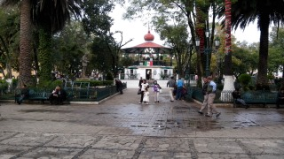
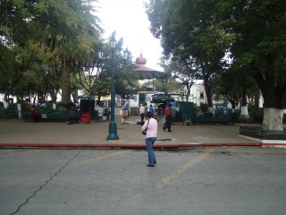
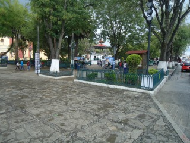
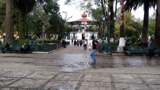
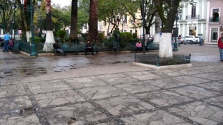

La plaza central de San Cristóbal, Chiapas, tiene varios nombres. Pueden llamarla Plaza 31 de Marzo, Parque Vicente Espinoza, el zócalo, o sencillamente el parque central. Es el corazón de San Cristóbal de las Casas, una de las atracciones que debes visitar y un importante lugar de reunión. Los amplios senderos que llevan por la plaza están bordeados con bancas de hierro forjado. Siéntate en la sombra o pasea unas horas admirando el paisaje mientras disfrutas de una taza de café orgánico chiapaneco de uno de los cafés cercanos.
Al atardecer, los músicos entretienen a la gente que se reúne alrededor del quiosco que se encuentra en el centro del zócalo.
Se encuentra ubicado entre las calles Diego de Mazariegos y Guadalupe Victoria en el centro de la ciudad.
Si usted se encuentra ubicado el arco del carmen puede caminar 3 cuadras sobre el andador para llegar directamente al parque central.
En el lugar usted puede realizar actividades como:
* Fotografía
* Compra de artesanías
* Gastronomía
* Visita a lugares históricos
* Asistencia a eventos científicos
* Asistencia a eventos culturales
* Asistencia a eventos gastronómicos
* Asistencia a ferias artesanales
* Asistencia a ferias industriales
* Asistencia a festivales de cine
* Asistencia a festivales de música
* Asistencia a festivales de rock
* Asistencia a festivales folklóricos
* Asistencia a festivales de ópera y ballet





posicione el mouse sobre las imágenes